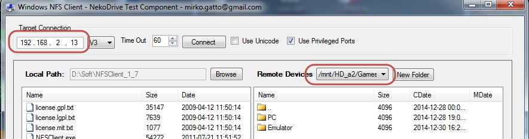
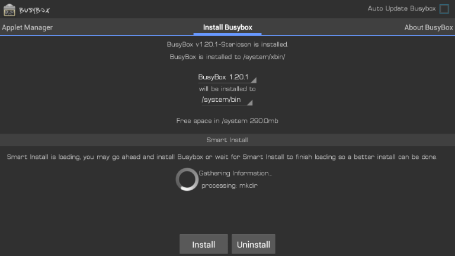
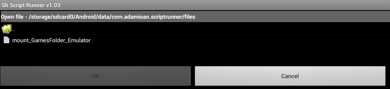
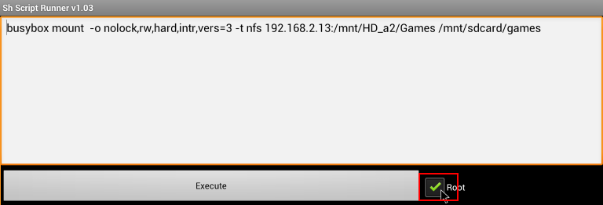
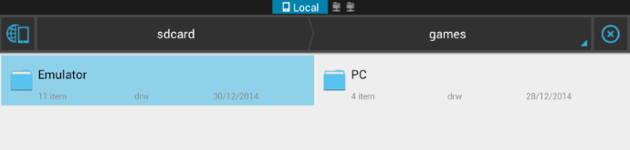

How to configure Ouya to handle NFS share
Sat 20 December 2014

The solution below is specific to the DNS323 NAS. Somehow, it can be easily tweaked to handle any NAS as long as it gets some NFS Support.
From time to time, I just want to play some old emulated games, and I was really tired of copying the roms to the ouya sdcard just to play. So I looked for a method to share the folder of all my ROMS on my NAS to the Ouya, just to be able to play everything I want, the time I want it to.
Here, in this tutorial I'll show you how, the steps needed to perform what I did to get it done.
Some Packages needed :
- Superuser
- Shell terminal Emulator, or Better terminal (Found out that this one support Ctrl+J as a remplacement for my keyboard Enter key)
- Universal Init.d or sh script runner
1- Create an NFS share on our NAS
Here I suppose that you get NFS already working on your NAS. If you don't please do so. You can grab good tutorial on how to do that. Please let me know, if you want me write something on how to install NFS on DNS-323.
First step, Configure the share in the /etc/exports file
/mnt/HD_a2/Games 192.168.2.0/24(rw,no_root_squash,insecure)
In my case, I didn't bother to restrict the access. Every device in my LAN can have access to this share with a read/write permission. You can do so, or you can limit to the Ouya device. Check NFS manual on how to do this.
restart the nfs deamon :
/ffp/start/unfsd.sh restart
In my case, to verify that the share is working, I used nekodrive NFS Client on windows. In the screenshot below, my NAS IP is 192.168.2.13, and we can see clearly that the share : /mnt/HD_a2/Games is working !

2- Create the Mount Point
Create a simple folder in the sdcard. This will serve as a mounting point, where Emulator get their contents :
/mnt/sdcard/games
3- Install BusyBox
In my case, I just sideloaded an available apk of busybox found on the internet to Ouya, using the web uplaod page.

4- Mount the Drive with BusyBox
From this great post you must issue this command
busybox mount -o nolock,ro,hard,intr,vers=3 -t nfs 192.xxx.xxx.xxx:/your/nfs/share /mnt/sdcard/YourLocalFolder
I used rw, for the mounting option as some emulator need some writing permission to set their environnement (Mame4Droid)
So, in my case, I just typed this command
busybox mount -o nolock,rw,hard,intr,vers=3 -t nfs 192.168.2.13:/mnt/HD_a2/Games /mnt/sdcard/games
5- Make this automatic
If you a real gamer, and want this script to be run on every boot, you can sideload Universal Init.d (as Ouya don't have a real support for some exection of boot script) Or, if you a casual gamer, and wanna a simple method, you can use : sh script runner (v1.03).

You have to click on the U button, to load/save files. Here's the same command from the above step saved in a file to be executed each time I wanna play some games :
In the next screen, don't forget to check Root access. SuperUser will popup to ask you if you want to allow the program to get root access.

6- Test the whole thing
After successful execution, you can check with ES File Explorer that our sdcard/games folder point to the same NFS folder :

Some Tips:
1- When you launch the Mame4Droid emulator, it'll try to create a Mame4Droid folder, and it'll ask you to put the rom inside it. I find this really cumbersome, as all my rom are already set up. Here's what I came up to avoid such process: Rename rom folder of MAME4Droid (to roms.old for exampe) and create a symbolic link with this command :
ln -s ../MameUI32/roms roms
2- First folder is my already setup of Mame32 with its rom folder containing the roms.
Second folder is roms, the one that Mame4Droid use for loading roms.
If you want to unmout, you can use this command, and repeat the step 4 so can unmount the folder automatically. For me, I don't care as I often shut down the ouya
busybox umount /mnt/HD_a2/Games